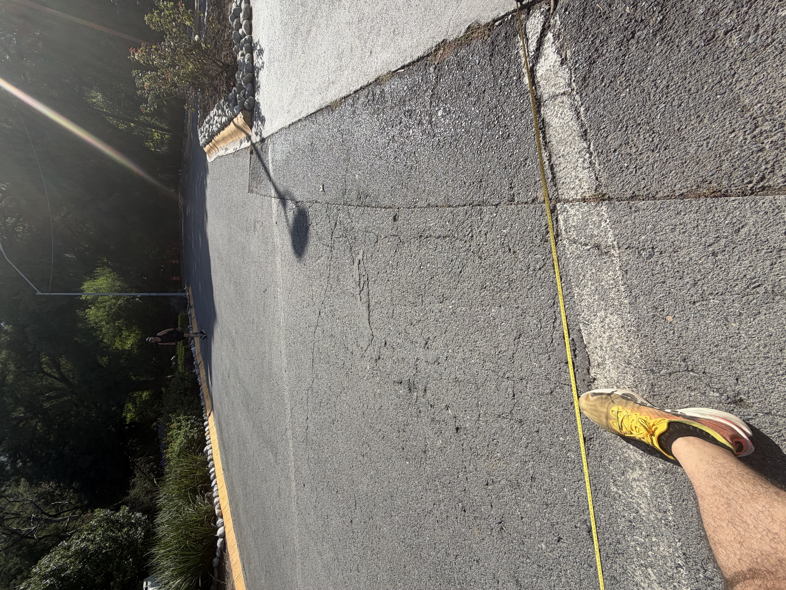
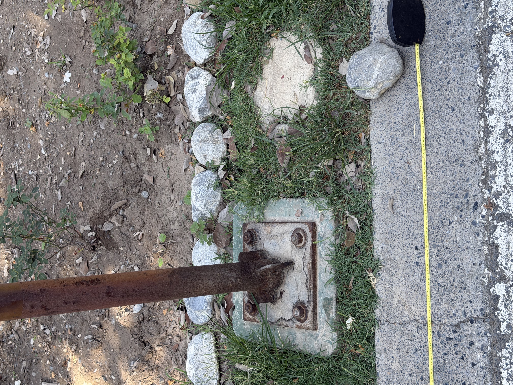
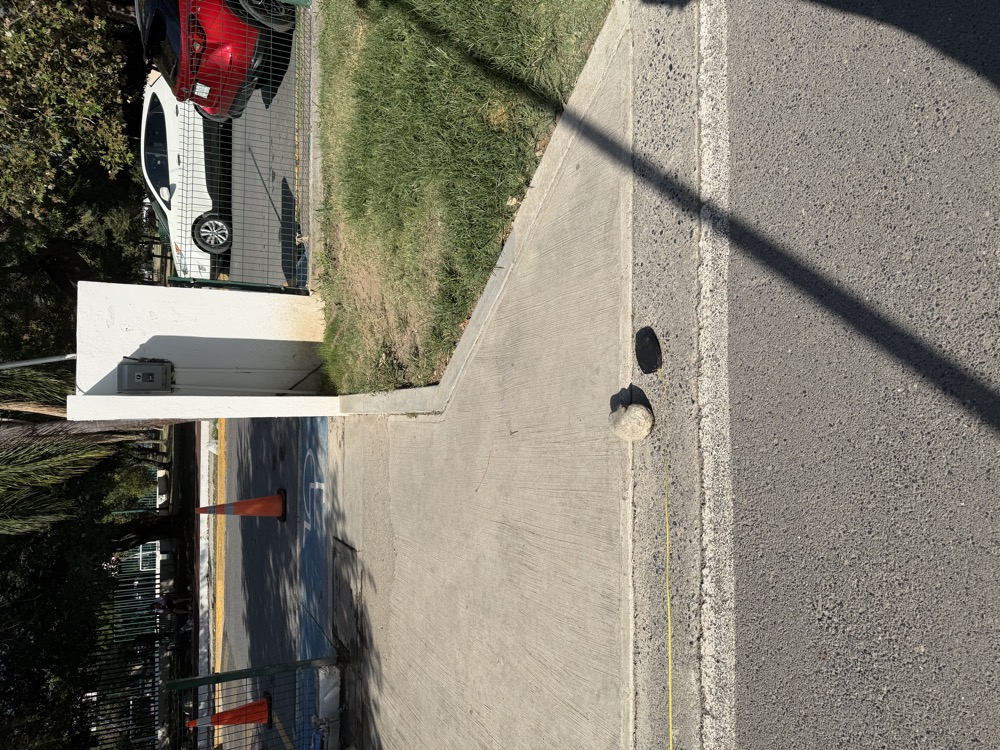
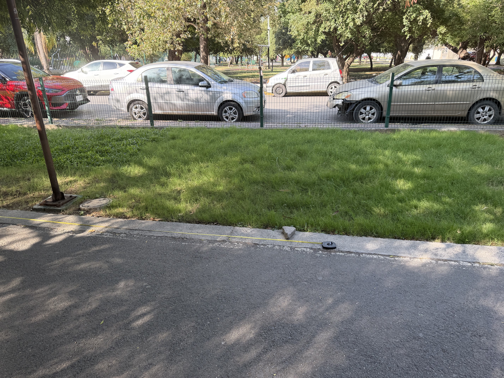
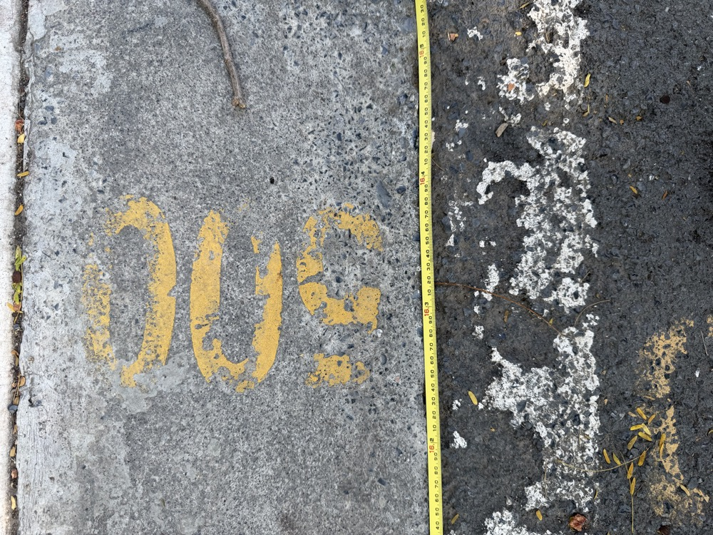
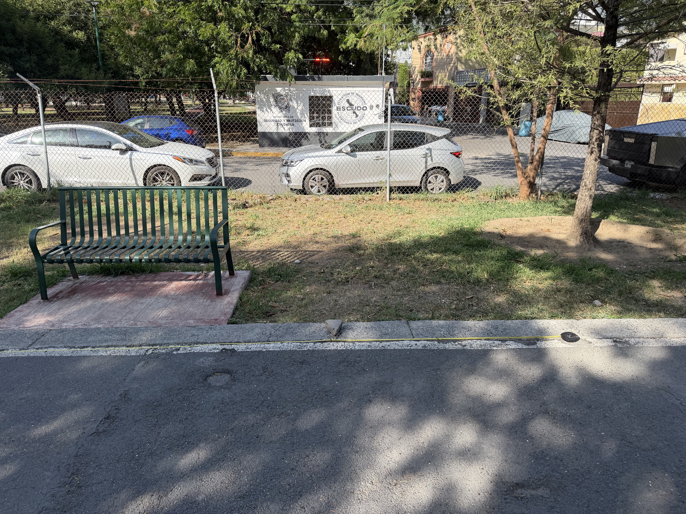
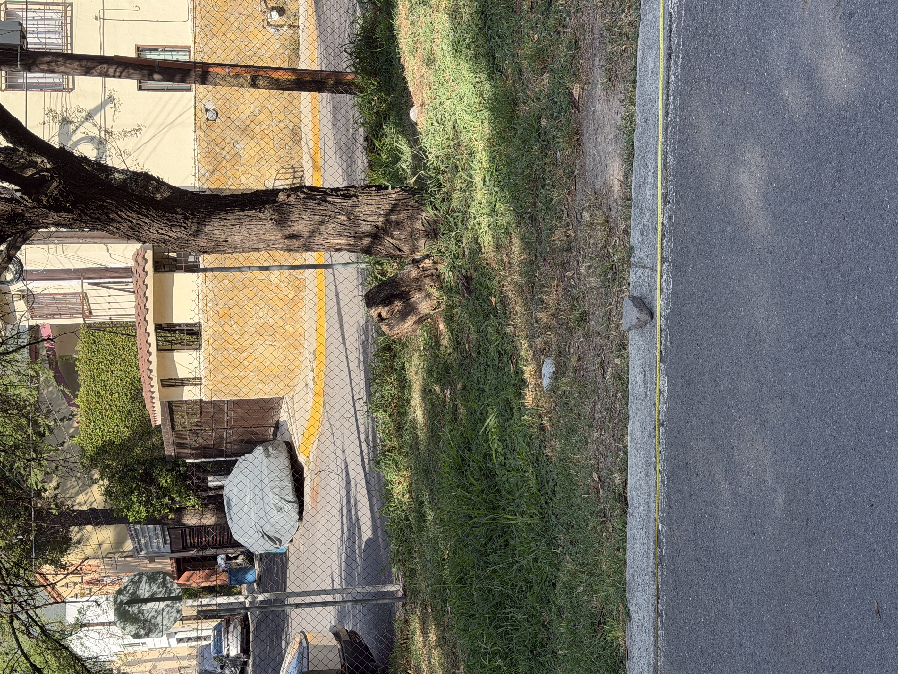

🏃 Pista Río la Silla
100m
🔍 Zoom y Arrastre Completo 360°
📱 Modo Swipe
🛰️ GPS en Vivo
Estación -1 (-10m)
0.0m (Estación 0)
Estación 6 (95m)
📡 GPS Activo:
Buscando señal...
--.----, --.----
Estación -1
⬅️ Desliza a la izq. | Punto Previo al Cero
-10.0 m
🔍 Zoom + Arrastrar 360°

🔄 Tocar para alternar
Toma 1 / 2
41.7° NE
Ajuste previo a Estación 0
📍 Maps
Estación 0 ⭐
🚩 Punto de Inicio Origen (Foco Inicial)
0.0 m
🚩
Inicio del Tramo (0.0m)
⬅️ Desliza a la izq. para Estación -1
➡️ Desliza a la der. para Estaciones 1 a 6
Tramo a Estación 1:
+15.0 m
Punto Cero
Estación 1
📍 Marca 15 Metros
15.0 m
🔍 Zoom + Arrastrar 360°

🔄 Tocar para alternar
Toma 1 / 2
234.1° SW
Tramo a Estación 2:
+15.0 m
📍 Maps
Estación 2
📍 Marca 30 Metros
30.0 m
🔍 Zoom + Arrastrar 360°

🔄 Tocar para alternar
Toma 1 / 2
233.9° SW
Tramo a Estación 3:
+15.0 m
📍 Maps
Estación 3
📍 Marca 45 Metros
45.0 m
🔍 Zoom + Arrastrar 360°

🔄 Tocar para alternar
Toma 1 / 2
220.6° SW
Tramo a Estación 4:
+15.0 m
📍 Maps
Estación 4
📍 Marca 60 Metros
60.0 m
🔍 Zoom + Arrastrar 360°

🔄 Tocar para alternar
Toma 1 / 2
228.3° SW
Tramo a Estación 5:
+15.0 m
📍 Maps
Estación 5
📍 Marca 75 Metros
75.0 m
🔍 Zoom + Arrastrar 360°

🔄 Tocar para alternar
Toma 1 / 2
219.7° SW
Tramo a Estación 6:
+20.0 m
📍 Maps
Estación 6
🏁 Marca 95m / 100m Final
95.0 m
🔍 Zoom + Arrastrar 360°

🔄 Tocar para alternar
Toma 1 / 2
234.4° SW
Meta Alcanzada:
95m / 100m
📍 Maps